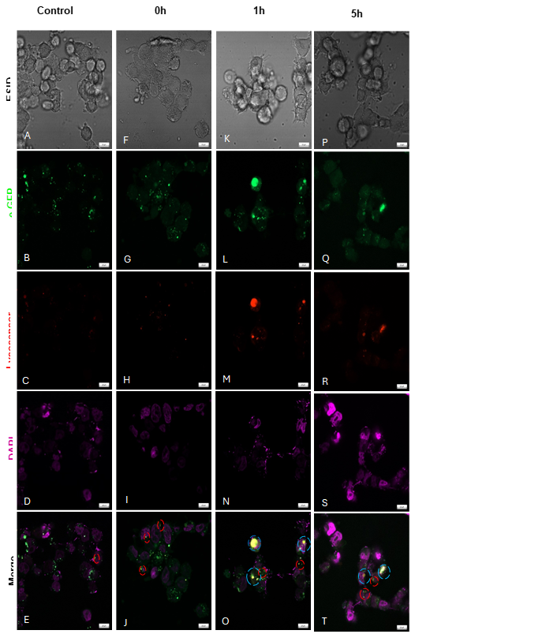
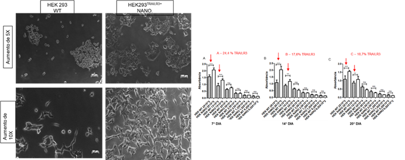

Fundação Ezequiel Dias
9.1- Transfecção dos genes RAD51B selvagem (Vetor 1) e RAD51Bc.295delGinsTTO (Vetor 2) na linhagem TOV-21G foi realizada com nanopartículas.
Figura 1: A,B,C,D e E: HEK-293 RAD51B e-GFP+ controle não tratado. F,G,H,I e J: Tratada com 50uM de etoposídeo por 0 horas. K, L,M,N e O: linhagem HEK-293 RAD51B e-GFP+ que foi tratada com 50uM do quimioterápico Etoposídeo por 1 hora. P,Q,R,S e T: linhagem HEK-293 RAD51B e-GFP+ que foi tratada com 50uM do quimioterápico Etoposídeo por 5 horas. Nas microfotografias E, J, O e T, as coalizões e-GFP e Lysosensor estão circuladas, e nas imagens J, O e T temos mais coalizões em relação ao grupo contole (E). Nas imagens O e T onde os tratamentos foram realizados por 1 e 5 horas respectivamente, temos vesículas maiores (circuladas em azul) contendo maior concentração de e-GFP dentro dessas vesículas.
Para inserção dos plasmídeos RAD51B selvagem (Vetor 1) e RAD51Bc.295delGinsTTO (Vetor 2) na linhagem TOV-21G foi realizada a transfecção celular por nanopartícula. As células TOV-21G cultivadas foram semeadas em placas de 6 poços na concentração de 1x106 células/poço e armazenadas em estufa a 37ºC e 5% CO2 por 24h para adesão. Após adesão, as células foram lavadas com PBS 1X e o meio de cultivo substituído por 199 + MCDB + 1% SFB. O protocolo utilizado foi semelhante à transfecção por Lipofectamina, com substituição do reagente Lipofectamina 3000 por solução de nanopartícula produzida pelo Serviço de Desenvolvimento Tecnológico Farmacêutico (SDTF/FUNED) e financiada pela rede de pesquisa NANOGENE (FAPEMIG RED-00053-21). As nanopartículas são compostas por triglicerídeos de cadeia média e polímero polietilenoimina ramificado Branched PEI-g-PEG (Sigma Aldrich, Cat. #900926). A carga (Zeta) e tamanho (Size) das nanopartículas foram monitoradas previamente à transfecção e seus resultados estão representados nas figuras 2 e 3, respectivamente. As nanopartículas devem apresentar carga positiva (em torno de 15mV) e um diâmetro de 200nm a 300nm com distribuição uniforme. Na Figura 2, o gráfico revela a contagem de partículas vs. o potencial dessas nanopartículas realizados na mesma amostra em triplicata. Essa medição indica se a carga das nanopartículas está positiva, característica importante para conferir afinidade pelo material que será encapsulado (DNA), que possui carga negativa. Os valores de aquisição estão especificados na tabela, indicando uma voltagem média de 14,9 mV. Na Figura 3 estão indicados os tamanhos das nanopartículas em suspensão realizados na mesma amostra em triplicata. O tamanho ideal das nanopartículas permite que estas sejam devidamente absorvidas pela célula, tenham baixa citotoxicidade, estejam estáveis e livres de agregação e, por fim, liberem a quantidade adequada de material genético para dentro das células durante a transfecção. As medições em triplicata indicam um diâmetro médio de 227,4 nanômetros (nm) e um índice de polidispersidade PDI baixo (0,145 a 0,209), indicando uma distribuição de tamanhos uniforme. No gráfico é possível observar um pequeno pico próximo a 10000 d.nm: resultado na agregação das nanopartículas, que ocorre espontaneamente com o tempo. A agregação indica a estabilidade dessas nanopartículas e se ainda podem ser utilizadas para transfecção, uma vez que a formação de agregados pode prejudicar a eficiência do ensaio.
9.2- Transfecção do gene TRAILR3 em linhagem, Hek 293 foi realizada com nanopartículas.
Fotomicrografia de HEK293TRAILR3+. É possível observar as células transfectadas por nanopartículas por microscópio invertido, quando estavam expressando TNFRSF10C/TRAILR3. Todas foram comparadas com células HEK293 WT, que estavam expressando 3,31% (não permeabilizadas) e 3,18% (permeabilizadas) de TNFRSF10C/TRAILR3. Os gráficos representam a transfecção por nanopartícula, em A, sétimo dia de cultivo as células HEK293TRAILR3+ estavam expressando 24,4% de TNFRSF10C/TRAILR3 e que para as concentrações celulares 2x105 e 1x105 obteve-se relevância estatística, em que o p foi de p < 0.001. No décimo quarto dia, em B, a expressão de TNFRSF10C/TRAILR3 dessas células é de 17,6% o decaimento na expressão foi baixo, e a significância estatística foi semelhante ao do sétimo dia. No vigésimo dia de acompanhamento, em C, as células HEK293TRAILR3+ aumentam cerca de 1% a expressão de TNFRSF10C/TRAILR3 (18,7% de expressão), e por isso o crescimento celular se mantém semelhante ao do décimo quarto dia com significância estatística de p < 0.01 para as duas primeiras concentrações celulares. (n=3)